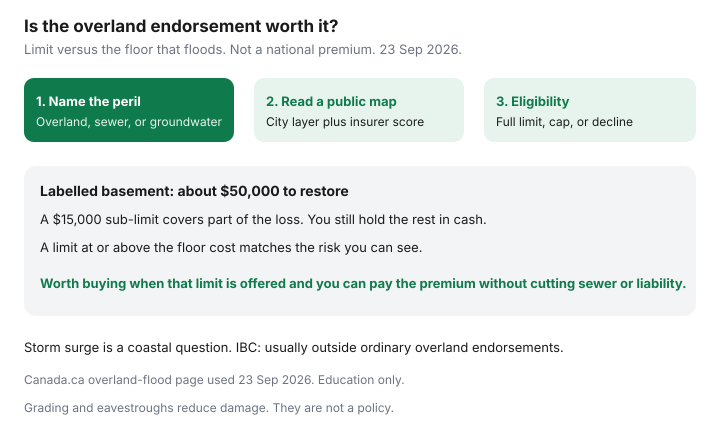

Insurance · Canada
Overland Flood Insurance in Canada: How to Decide If the Endorsement Is Worth It
Overland flood is fresh water that arrives from outside: heavy rain, rapid snowmelt, or a lake or river that overflows, entering at or above ground level. It is what many people mean by “flood insurance.” A standard Canadian home policy typically does not include it. Canada.ca says water damage such as a burst pipe may be basic coverage, and coverage for flooding is not typically included. Sewer backup is a second endorsement. Groundwater through the foundation is often a third. Buying one does not buy the others.
This page is the decision: whether the endorsement is offered, whether the limit matches the floor that would actually get wet, and what to do if a map or a renovation changes the answer. It is not a U.S. flood-program guide. Canada does not run that program. Availability is a private-market question, and some homes are declined.
Disclosure: Home-insurance quote flows and broker quote portals are offer types. Saving Optimizer may earn a commission if we later add partner links. We do not currently claim insurer partnerships. We do not sell policies. Education only. Public descriptions used 23 Sep 2026.
Key takeaways
- Overland flood, sewer backup, and groundwater are different perils. IBC says overland and sewer backup are typically optional, and storm surge is typically covered by neither.
- A clear municipal map does not guarantee an insurer will offer the endorsement. A river on the map does not mean you are automatically uninsurable. Ask with the postal code.
- Compare the endorsement limit with the cost to restore the vulnerable floor, not with the market value of the whole house.
- Grading, eavestroughs, and a plan for temporary barriers reduce damage. They do not replace the endorsement.
- Re-shop after a renovation or nearby development that changes runoff. Limits do not update themselves.
Define overland flood vs sewer backup vs groundwater—three different perils
Use the definitions when you phone, or you will buy the wrong line.
| Peril | Water arrives how | Typical treatment |
|---|---|---|
| Overland flood | Excessive rainfall or snowmelt, or freshwater from a lake, river, or similar source, entering from outside at or above ground level | Optional endorsement. Canada.ca: this is what many people mean by flood insurance. Availability depends on the insurer’s view of your risk. |
| Sewer backup | Water or sewage comes up through drains, a sump, or a septic system | Optional endorsement, offered by most insurers. Can happen in the same storm as overland flooding and still be a different grant of coverage. Detail is the sewer-backup map. |
| Groundwater | Water table rises or water enters through walls or the floor from below grade | Often excluded. Some broadened forms include it. Ask the question in those words. Do not assume the overland endorsement includes it. |
| Storm surge or tidal water | Coastal seawater driven by a storm | IBC: typically not covered by standard policies or by the usual optional flood endorsement. Coastal households should ask that question separately. |
Canada.ca also reminds renters: the landlord’s building policy does not cover your belongings. Tenant overland coverage, where it is offered, is a contents question. Start from the tenant guide for liability and contents, then add this peril if you store anything you cannot replace on the lowest floor.

Use public flood-risk and municipal maps before you assume you are safe
Insurers use their own flood scores. Public maps still stop two common mistakes: assuming a house is safe because it is not on a river, and assuming a house is uninsurable because a creek is three streets away.
- Read Canada.ca’s overland-flood page so you know which peril you are shopping.
- Open your municipality’s flood or basement-flooding map. Names differ: river floodplain maps, storm-sewer surcharge maps, and “historically flooded” street lists are not the same layer. Use the layer that matches the peril.
- Federal flood-hazard mapping (the Flood Hazard Identification and Mapping Program and maps provinces publish from it) is improving coverage. A missing map is not a finding of zero risk.
- Write down what the map shows, the date you looked, and the address. Take that note to the broker or the direct writer. Ask them what their score says. If the two disagree, believe the eligibility answer on the quote, and keep the map for the next renewal.
Basement flooding from a city sewer can hit a house the river map calls dry. That is why the sewer endorsement and the overland endorsement are both questions. Surface ponding on a flat lot after a cloudburst can be overland even when no river exists.
Eligibility and pricing: why some postal codes are declined or capped
Canada.ca states that availability varies by insurer and depends on flood risk as the insurer assesses it. In practice that means three outcomes, and you should ask which one you were given:
- Offered near the dwelling limit, with a deductible you can read.
- Offered with a cap — a sub-limit that may be far below the cost to restore a finished lower floor.
- Declined at that insurer. A broker can try another market. Some postal codes are declined by most of the market. There is no public national flood pool that fills that gap the way some countries operate one. If you are declined, the mitigation and the emergency fund become the plan, and you should hear that in writing rather than assume a “water” line on the policy already did the job.
Price is postal-code specific. This guide does not print a sample premium, because a sample would be fiction. The worth-it test below uses your quote and your restoration number, not a national average.
A package labelled “water protection” still needs the three peril names on the declarations. If overland is missing, you do not have overland, however green the brochure was.
Compare endorsement limit vs rebuilding cost of the vulnerable floor
The market value of the house includes land and upper floors that may stay dry. The endorsement’s job is the part that floods: usually the basement or a slab-on-grade main floor, plus contents stored there, plus additional living expenses if you cannot stay.
| Piece | Labelled cost | Does a $15,000 overland sub-limit cover it? |
|---|---|---|
| Tear-out, dry, and rebuild of finishes | $35,000 | No. The cap is gone before cabinets. |
| Contents on that floor | $12,000 | Only if contents are inside the same limit, which makes the building shortfall worse. |
| Additional living expenses, two weeks | $3,000 | Only if that coverage responds to overland and the limit is not already exhausted. |
| Total labelled exposure | $50,000 | A $15,000 cap leaves $35,000 uninsured before the deductible. A limit at or above $50,000 matches this sketch. |
Worth it, as a household rule: if the insurer will sell a limit that covers that floor for a premium you can pay every year without dropping liability or sewer backup, buy it. If the only offer is a cap far below the floor, know you are buying a partial cheque, and price the rest as money you would have to hold in cash. If the offer is a decline, stop telling yourself the standard policy “includes flood.” It does not.
Settlement basis still matters. Replacement cost versus actual cash value on the finishes and contents is a separate choice, covered in the replacement-cost guide.
Pair with mitigation: grading, eavestroughs, and temporary barrier plans
Insurance pays after water is inside. Grading and maintenance are how you keep it outside. None of this is a substitute for the endorsement.
- Grade soil so it slopes away from the foundation. A patio that pitches toward the house is a funnel.
- Eavestroughs and downspouts that discharge away from the foundation, not into the window well. Clean them before freeze-up.
- Window wells and basement windows that are above the ponding line, with covers that still allow emergency exit where the building code requires an egress window. Do not block a legal bedroom exit to stop water.
- Temporary barriers — sandbags or commercial door barriers — only if you know where they are stored and who is home to deploy them. A barrier in a cottage three hours away does not help a weekday storm.
- Sump and backwater valve for the sewer path, which is the other endorsement. See the sewer guide for what insurers ask to see.
Municipal subsidies, where they exist, are local. Check this year’s city page before you hire. Keep invoices.
Annual review after renovations or nearby development that changes runoff
Overland eligibility is not a one-time sticker. Put it on the 45-day review when any of these happen:
- You finish or furnish a lower level, which raises the restoration number in the table above.
- A neighbour’s infill, a new municipal drain, or a lost boulevard tree changes where water sits. Walk the lot in a heavy rain once a year and write down where it ponds.
- The insurer’s flood model is updated and a renewal suddenly caps or drops the endorsement. That is a quote event, not a shrug. Ask a second market before you accept a renewal that deleted the line to hold the price.
- You add a below-grade entrance. Tell the insurer. A new door at the bottom of a stairwell is a new way in for surface water.
Quote one broker market and one direct writer on the same overland limit, sewer limit, and deductible. A lower premium that removed overland is the expensive quote. Switching rules — bind first, no gap — are in the loyalty and switching guide.
Sources & date stamps
- Canada.ca, Overland flood insurance — standard policies typically do not include flooding; overland is the freshwater endorsement people mean; availability depends on the insurer’s risk view; landlord insurance does not cover a renter’s belongings (used 23 Sep 2026).
- Insurance Bureau of Canada, flood and water protection, and flooding and insurance — overland and sewer backup typically optional; groundwater risk even away from a river; storm surge typically excluded (used 23 Sep 2026).
- Natural Resources Canada and provincial partners, Flood Hazard Identification and Mapping Program — public maps are incomplete and are not an insurer’s eligibility decision (program described as of 23 Sep 2026).
Frequently asked questions
What is overland flood insurance in Canada?
Canada.ca describes it as coverage for damage from excessive rainfall, snowmelt, or freshwater overflowing from lakes, rivers, and similar sources. It is usually an endorsement. A standard policy's burst-pipe coverage is not flood insurance.
Does sewer backup include overland flood?
No. They are different perils. Groundwater through the foundation is often a third exclusion. Coastal storm surge is typically outside ordinary overland endorsements, according to the Insurance Bureau of Canada.
How do we know if our house is eligible?
Read the municipal flood or basement-flooding map, then ask the insurer. Some postal codes are offered a full limit, some are capped, and some are declined. A public map is not the insurer's score.
When is the endorsement worth buying?
When the limit covers the cost to restore the vulnerable floor and contents, and you can pay the premium without dropping sewer backup or liability. A low sub-limit is a partial cheque. A decline means the standard policy still does not include flood.
Is this insurance advice?
No. Education only. We do not sell policies or quote a national flood premium.